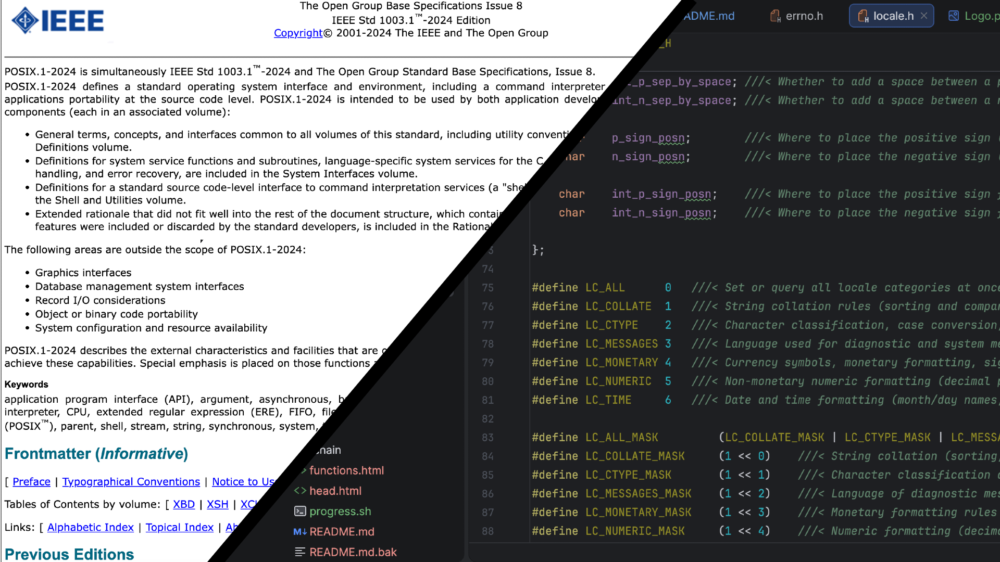

|
LibC 0.1
|
|
LibC 0.1
|



LibC is my implementation of the C standard library, compliant with The Open Group Standard Base Specifications's POSIX.1-2024 (IEEE Std 1003.1) specification. This LibC is designed to be easily portable to other hobby kernels requiring a single header consisting of a only couple definitions and 16 'glue' functions.
I created this (rather than using a more efficient, pre-existing one ) as a learning experience. It has been fun diving into how a OS works and I thought it would also be fun to dive into how the OS exposes an API to userspace via the standard c library. Additionally, I didn't like the organisation of some of the other LibC implementations out there (personal preference) which was added incentive.
Currently, LibC is not finished and thus doesnt support any platforms, however, in the future I plan to implement support for MaxOS, MacOS and Linux. Maybe even a port for windows in the future.
This repo houses the source code for the standard library and some supporting scripts to build documentation. The repository also contains the latest build, which can be downloaded from the workflow artifacts.
This is how to build the LibC library from source and install it into your system or project. (Alternatively, you can download the latest built library from the workflow artifacts)
Currently, LibC cant build yet, will be updated later.
To build LibC needs a valid compiler and cmake version 3.31 or higher.
You will also need to pick a target from the following:
| Target | Description |
|---|---|
| example | Minmal stub implementation, will compile but most will error |
| MaxOS | Native LibC for MaxOS kernel and userspace |
Included is the example platform target which is a minimal stub implementation of a platform the supports none of the platform specific features. Whilst the example platform should compile, it is not recommended to use as most of the standard functions will error.
When adding your own platform, it is recommended to copy the example and replace each part with the specific values and implementations that your platform offers. Additionally, you will have to setup the build options for your target in the CMakeLists.txt file.
Contributions are what make the open source community such an amazing place to learn, inspire, and create. Any contributions you make are greatly appreciated.
If you have a suggestion that would make this better, please fork the repo and create a pull request. You can also simply open an issue with the tag "enhancement". Don't forget to give the project a star! Thanks again!
git checkout -b feature/AmazingFeature))Push to the Branch (git push origin feature/AmazingFeature`)Distributed under the BSD 3-Clause License. See LICENSE for more information.